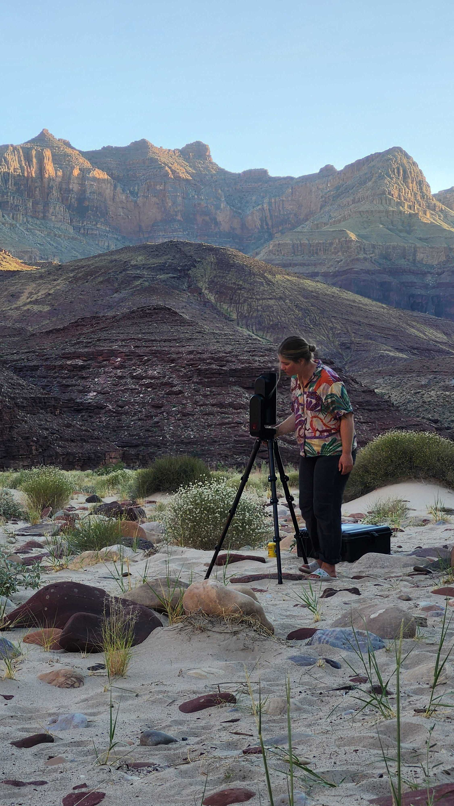
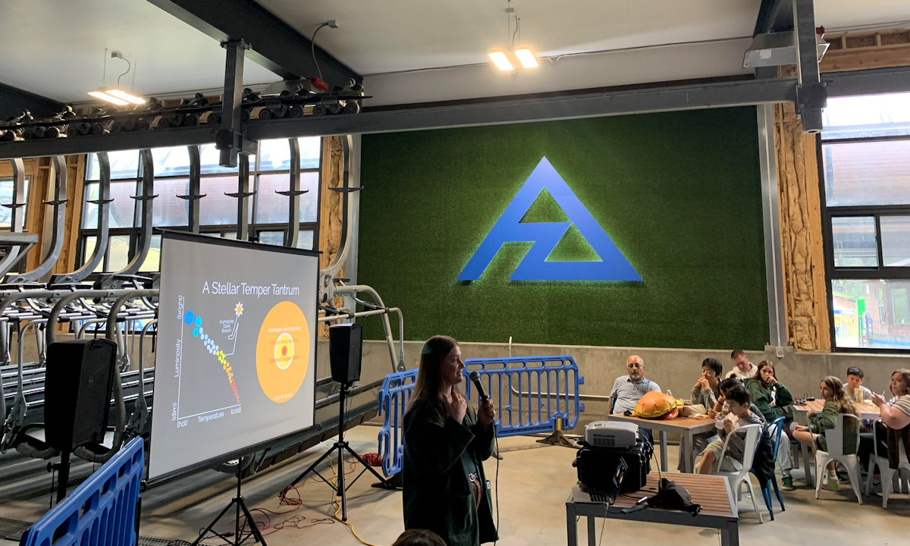
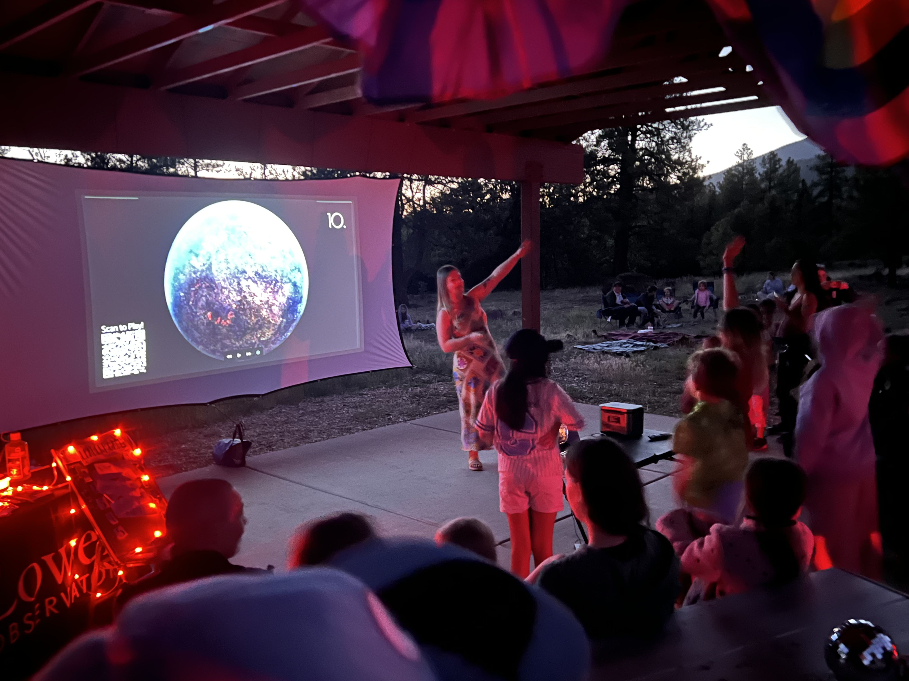
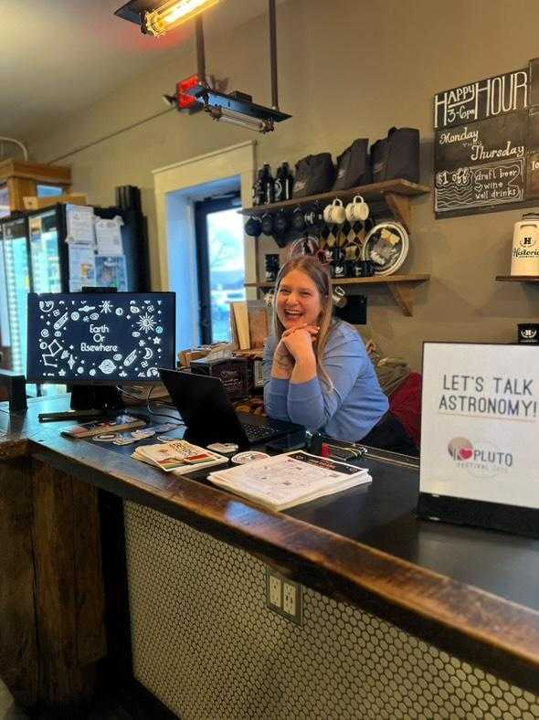
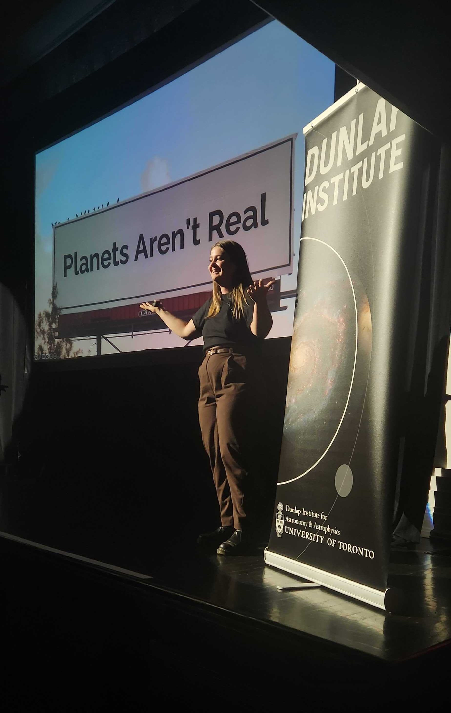
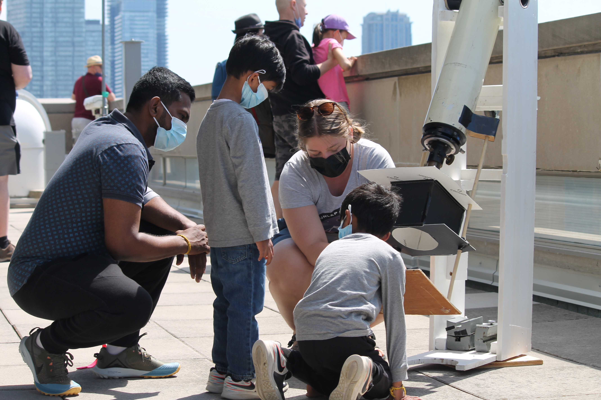

Outreach
My primary goal with my outreach is to make astronomy more inclusive and accessible for people who have been systematically marginalized or historically excluded. I focus not only on effectively communicating complex technical ideas, but also on centering stories of astronomy in which audiences can see themselves reflected and to which they can feel connected.
Please click through the photos from various events to learn more about the programs and people behind them.

Astronomy in Grand Canyon
I've' been invited as the Astronomer on multiple 16-day Grand Canyon rafting expeditions with Canyon Explorations/Expeditions. By day, we learn about the Canyon's geology, human history, and environmental challenges from the incredible guides. By night, far from any city lights, we explore the night sky, using the stars to explore where we come from and the physics that shapes our universe.
I've' been invited as the Astronomer on multiple 16-day Grand Canyon rafting expeditions with Canyon Explorations/Expeditions. By day, we learn about the Canyon's geology, human history, and environmental challenges from the incredible guides. By night, far from any city lights, we explore the night sky, using the stars to explore where we come from and the physics that shapes our universe.

Astronomy on Tap, Flagstaff
An Astronomy on Tap talk at Arizona Snowbowl on how stars like the Sun die, and what happens to their planetary systems. Check out Flagstaff astronomy on Tap here.
An Astronomy on Tap talk at Arizona Snowbowl on how stars like the Sun die, and what happens to their planetary systems. Check out Flagstaff astronomy on Tap here.

Stargazing at Flagstaff Pride
A spirited game of 'Moon or Frying Pan' waiting for the Sun to set at a stargazing event with Flagstaff Pride.
A spirited game of 'Moon or Frying Pan' waiting for the Sun to set at a stargazing event with Flagstaff Pride.

I <3 Pluto Fest
Hosting an Ask an Astronomer stop and playing 'Earth or Elsewhere' during Lowell Observatory's I Heart Pluto Festival.
Hosting an Ask an Astronomer stop and playing 'Earth or Elsewhere' during Lowell Observatory's I Heart Pluto Festival.

Astronomy on Tap, Dunlap Institute
Giving a talk on planet formation at the Dunlap Institute's Astronomy on Tap. Taking place at Toronto's historic Great Hall, it is one of the largest Tap events in the world.
Giving a talk on planet formation at the Dunlap Institute's Astronomy on Tap. Taking place at Toronto's historic Great Hall, it is one of the largest Tap events in the world.

Viewing the Sun indirectly on the balcony of McLennan Physical Laboratories at the University of Toronto for Doors Open Toronto.
Using a Solar
Using a Solar